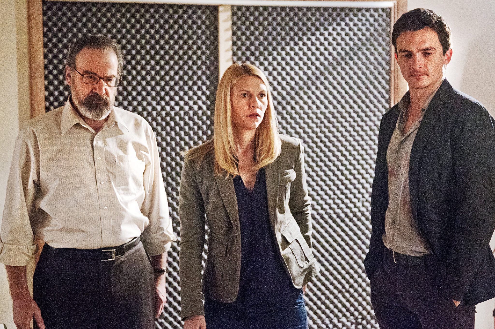

About Carrie
Carrie is extremely smart, brave and strong headed working as a CIA Officer.She risks her life to capture most dangerous terrorists of the world. She is a wonder woman in true sense.
Carrie and her close friends
Carrie's Characterisitcs
- She is a bad-ass
- She is passionate about her country and can do anything to protect it
- She is very intuitive and makes decisions using her intuition
Carrie's Friends
Carrie has some great keepers and very close friends. Her closest friends are Saul Berenson and Peter Quinn. They both are awesome! Click on the links below to read about them: